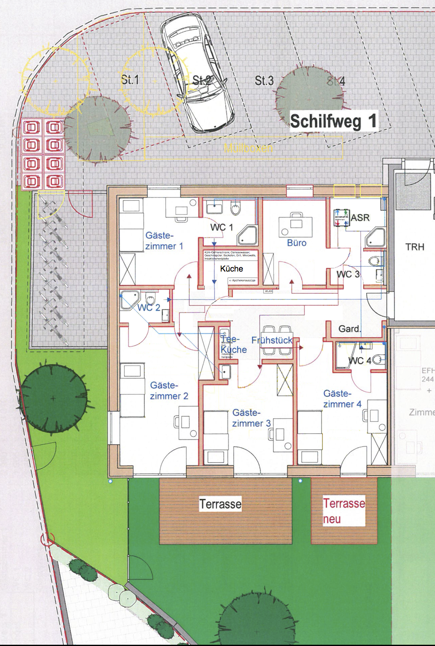
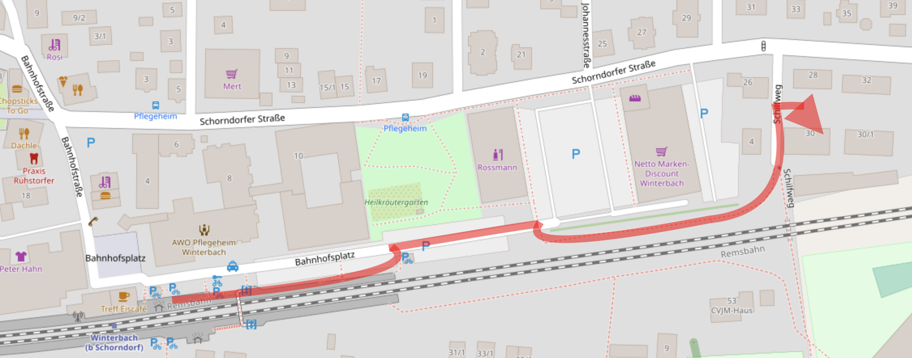

Über uns
Winterbacher Gästezimmer Wohnen auf Zeit GbR
Wir beherbergen Ihre Privat- und Geschäftsgäste in einer gut ausgestatteten, ruhigen Passivhauswohnung.
Winterbach, Schilfweg 1 250 m vom Bahnhof
Kontakt
- 📧 remstal_gaestezimmer@icloud.com
- 📞 +49 179 / 4519536 (Martin, Buchung & Abrechnung)
- 📞 +49 160 / 1446268 (Rodika, Ansprechpartner vor Ort)
Unser Angebot

- Die Gästewohnung ist qualitativ gut möbliert. Für alle Gäste nutzbar ist das freie WLAN, die Waschmaschine und der Flur-Begegnungsraum mit der Sitzecke. Die Küche ist ausgestattet mit hochwertigen Küchengeräten, einem Osmosewasserhahn (als Trinkwasser nutzbar), Spülmaschine, Herd mit Backofen und einem Kühlschrank m. Gefrierfach.
- Sollte die Ferienwohnung einmal komplett vermietet sein, stehen für alle weiteren Mieter die Teeküche zur Verfügung, welche ebenfalls 2 Herdplatten, Spüle, die Mikrowelle und einen Kühlschrank beherbergt. Hier steht auch die neue Kaffeepadmaschine, mit allen handelsüblichen Kaffeepads verwendbar.
- Jedes Zimmer verfügt über ein Fernsehgerät und ein eigenes Duschbad (ausgenommen G3). Möbliert sind alle Zimmer mit zwei Einzelbetten, auch als Doppel- oder Stapelbett stellbar; Schränken und einem Schreibtisch nebst Sitzgelegenheit.
Nach Bedarf können wir Kinderstühle und auch Kinderbetten bereitstellen.
Die Gästezimmer 1 und 2 inklusive Küchennutzung werden auf Wunsch zur abgeschlossenen Ferienwohnung durch eine Flurtür. (Siehe Extrapreise für die Ferienwohnung)
Wir bieten auch Monteurszimmer.
Haustiere können wir leider nicht aufnehmen.
Wegbeschreibung
Adresse:
- Winterbacher Gästezimmer - Wohnen auf Zeit GbR
- Schilfweg 1, 73650 Winterbach
- GPS-Koordinaten: TODO
Anfahrt mit der S-Bahn
Vom S-Bahnhof (Linie 2, aus Stuttgart kommend) gehen Sie über den Steg (Aufzug verfügbar), dann nach Osten und weiter auf dem geschotterten Fußweg entlang der Gleise.
So laufen Sie nach 300 m direkt auf das Haus Schilfweg 1 zu:

Benutzen Sie die Klingel Gästezimmer an der Haustür oder rufen Sie, falls niemand öffnet, +49 160 1446268 (Rodika Häcker-Christian) an. Sie wohnt nur einige Straßen weiter und kann sofort öffnen.
Anfahrt mit dem PKW
Hinweis: Noch nicht alle Navis finden unser Neubaugebiet!
Verlassen Sie in der Ortsmitte Winterbach (Sie sehen dort Banken, Marktplatz mit Marktbrunnen, altes Rathaus, Kirche, Gasthaus Krone) den Kreisverkehr nach Osten (Wegweiser: S-Bahn), fahren ca. 600 m weiter auf der Schorndorfer Straße. Die erste Straße rechts nach dem Netto-Supermarkt ist der Schilfweg.
Wenn Sie von Osten (aus Schorndorf-Weiler)oder über die Umgehungsstraße kommen: Am Kreisverkehr Richtung Winterbach in die Schorndorfer Straße abbiegen. Der Schilfweg ist die erste Abzweigung nach links in Winterbach.
Auf den drei Stellplätzen rechts von der Haustür dürfen Sie nach vorheriger Absprache parken. (Das Finanzamt verlangt von uns dafür mindestens 2€/Nacht zu verlangen. Pardon.) Ebenfalls nach Absprache steht dort auch ein eine Stromtankstelle für Elektroautos und Pedelecs für Sie bereit.
Fotos
 Gemeinschaftsraum
Gemeinschaftsraum
 Gästezimmer 1
Gästezimmer 1
 Gästezimmer 2
Gästezimmer 2
 Bad
Bad
 Küche
Küche
Kosten
Die Einzelzimmer kosten zwischen 55 und 65 € pro Nacht, je nach Zimmergröße; belegt als Doppelzimmer zwischen 82,50 und 97,50 €. Jede 4. Nacht ist kostenfrei.
Möchten Sie G1 + G2 als Ferienwohnung komplett buchen? So kommen Sie bitte mit einer möglichst genauen Vorstellung über Dauer des Aufenthaltes und Personenanzahl auf uns zu und überlegen sich, ob Sie die Küche zur Exklusivnutzung benötigen.
Kinder bis 6 Jahre sind kostenlos.
Sprechen Sie wegen längerer Aufenthalten oder Monteurzimmern bitte mit uns.
Buchen
Schicken Sie uns bitte eine 📧 email mit folgenden Daten:
- Ihrer Anschrift und Ihren Kontaktdaten
- Welchen Zeitraum würden sie gerne buchen?
- Wie viele Personen? Bringen Sie Kinder mit? Wenn ja, wie alt sind diese?
- Benötigen Sie einen Parkplatz?
Planen Sie einen längeren Zeitraum bei uns zu verbringen? Sprechen Sie uns bitte darauf an.